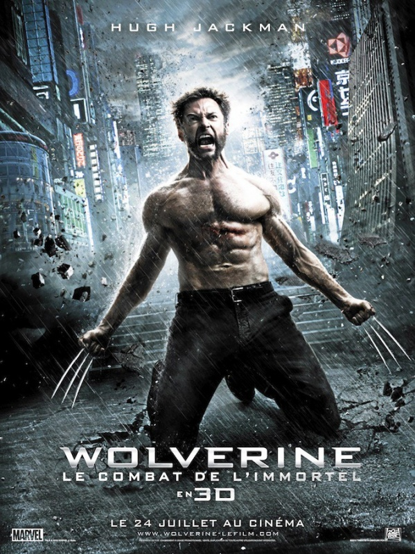
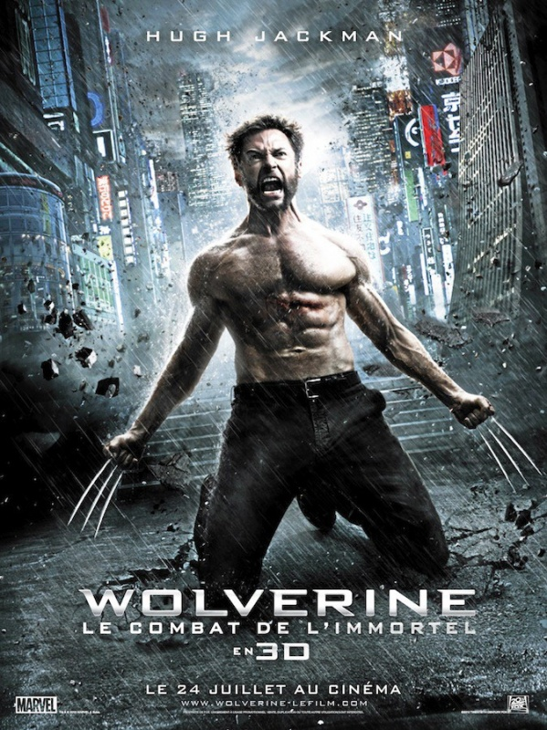

ACCION | AVENTURA
Secuela de "X-Men: la decisión final". El film se centra en la soledad del protagonista tras la desaparición definitiva de Jean Grey y otros compañeros. Logan amnésico busca respuestas sobre su pasado en el mundo del crimen organizado de Japón, donde un hombre al que salvó la vida en el pasado le ofrece algo que lleva tiempo deseando.
Director: James Mangold
Producción: Lauren Shuler Donner, Hutch Parker
Guion: Mark Bomback, Scott Frank
Estreno: 24 de julio de 2013
Duración: 150 minutos